<!DOCTYPE html>
<html lang="pt-BR">
<head>
<script type="text/javascript">
    (function(c,l,a,r,i,t,y){
        c[a]=c[a]||function(){(c[a].q=c[a].q||[]).push(arguments)};
        t=l.createElement(r);t.async=1;t.src="https://www.clarity.ms/tag/"+i;
        y=l.getElementsByTagName(r)[0];y.parentNode.insertBefore(t,y);
    })(window, document, "clarity", "script", "yn210flvy6");
<!-- Google tag (gtag.js) -->
<script>
  window.dataLayer = window.dataLayer || [];
  function gtag(){dataLayer.push(arguments);}
  gtag('js', new Date());

  gtag('config', 'G-T9KJ7E1B84');
<meta charset="UTF-8">
<meta name="viewport" content="width=device-width, initial-scale=1.0">
<title>Localization (GUI Translation) — Manual N1MM+ em Português</title>
<meta name="description" content="Tradução não-oficial, feita pela comunidade brasileira de radioamadorismo, da seção de tradução da interface (Localization) do manual oficial do N1MM Logger+.">
<meta property="og:title" content="Localization (GUI Translation) — Manual N1MM+ em Português">
<meta property="og:description" content="Tradução não-oficial, feita pela comunidade brasileira de radioamadorismo, da seção de tradução da interface (Localization) do manual oficial do N1MM Logger+.">
<meta property="og:image" content="https://n1mm.gg52floripadx.com/assets/img/og-image.png">
<meta property="og:url" content="https://n1mm.gg52floripadx.com/setup/localization/index.html">
<meta property="og:type" content="website">
<meta property="og:site_name" content="Manual N1MM+ em Português">
<meta name="twitter:card" content="summary_large_image">
<meta name="twitter:title" content="Localization (GUI Translation) — Manual N1MM+ em Português">
<meta name="twitter:description" content="Tradução não-oficial, feita pela comunidade brasileira de radioamadorismo, da seção de tradução da interface (Localization) do manual oficial do N1MM Logger+.">
<meta name="twitter:image" content="https://n1mm.gg52floripadx.com/assets/img/og-image.png">
<link rel="stylesheet" href="../../assets/css/style.css">
<link rel="icon" href="../../assets/favicon-32.jpg" sizes="32x32">
<link rel="icon" href="../../assets/favicon.jpg" sizes="192x192">
<link rel="apple-touch-icon" href="../../assets/favicon.jpg">
</head>
<body>

<div class="topo">
  <div class="marca">
    <a href="https://n1mm.gg52floripadx.com/">Manual N1MM+ em Português</a>
    <a href="../index.html">&larr; Voltar para Setup</a>
  </div>
</div>

<div class="aviso-traducao">
  <div class="conteudo">
    📖 <strong>Tradução não-oficial</strong>, mantida pela comunidade brasileira de radioamadorismo.
    Termos de interface do programa (nomes de abas, campos e diálogos) foram mantidos em inglês.
    Página original em inglês: <a href="https://n1mmwp.hamdocs.com/setup/localization/" target="_blank" rel="noopener">n1mmwp.hamdocs.com/setup/localization</a>.
    Direitos autorais do conteúdo original: N1MM Logger+ Team.
  </div>
</div>

<main>
  <nav class="trilha">
    <a href="https://n1mm.gg52floripadx.com/">Início</a> &raquo;
    <a href="../index.html">Setup</a> &raquo;
    Localization (GUI Translation)
</nav>

  <h1>Localization (GUI Translation) <span class="tag-en">EN: Localization</span></h1>

  <p><em>Nota da tradução: esta página descreve a ferramenta interna do N1MM+ para traduzir a própria interface do programa (janelas, botões, menus) — um projeto totalmente separado deste, que traduz o manual. Se você quiser deixar a interface do N1MM+ em português, é esta a ferramenta a usar.</em></p>

  <h2>Introduction (Introdução)</h2>

  <p>Normalmente, a localização (definida aqui como a tradução da interface gráfica) acontece em uma aplicação como resultado da colaboração entre desenvolvedores e especialistas em idiomas. Os desenvolvedores usam ferramentas fornecidas pelo fabricante do software (no caso, o Microsoft Visual Studio) para extrair do código um banco de strings (textos). Depois, processam esse banco para indicar quais strings podem ser traduzidas, quais são fixas, e quais nunca devem ser traduzidas. O banco processado é então convertido em um arquivo simples (Excel ou .csv) contendo as strings, geralmente em inglês, que é enviado a um especialista em idiomas para tradução. Esse arquivo volta traduzido para a equipe de desenvolvimento, que o processa em um "arquivo de recursos" e o inclui no pacote de instalação da aplicação. É preciso ainda um trabalho adicional para permitir que o usuário escolha o idioma exibido na aplicação.</p>

  <p>É assim que muitas aplicações comerciais são localizadas, e funciona bem quando a aplicação muda pouco e a equipe de desenvolvimento tem recursos suficientes para gerenciar o processo de localização. Não é o caso do N1MM+.</p>

  <p>Pensando em uma forma de estender a funcionalidade de tradução para a comunidade multilíngue de radioamadores sem um esforço de desenvolvimento enorme, foi criada uma abordagem híbrida que oferece vantagens operacionais aos usuários e tira da equipe de desenvolvimento o peso do suporte, através de um modelo de autoatendimento em que os próprios usuários do N1MM+ compartilham tanto o esforço de tradução quanto o fruto do trabalho uns dos outros. No geral, tentamos seguir o Princípio de Pareto, em que os usuários obtêm 80% dos benefícios de uma aplicação totalmente localizada com 20% do trabalho.</p>

  <p>Este documento tem duas seções principais:</p>

  <ol>
    <li>Uma descrição geral de como o processo funciona</li>
    <li>Documentação para os usuários do N1MM</li>
  </ol>

  <h2>How it Works (Como Funciona)</h2>

  <p>O que segue está bastante simplificado para clareza, para quem não é desenvolvedor de software.</p>

  <p>O N1MM+ é composto de formulários (forms) e código. Os formulários são facilmente reconhecíveis como praticamente qualquer janela com que o usuário interage. Exemplos incluem a Entry Window, a janela de Configuração e o Spectrum Display. Há aproximadamente 48 formulários no N1MM Logger+. Cada formulário contém vários controles com os quais o usuário interage. Tomando a Entry Window (o formulário principal do N1MM Logger+) como exemplo, há caixas de texto onde os dados de QSO são digitados, botões que disparam macros e outras ações, menus que permitem navegar pela aplicação, e uma barra de status que exibe texto informativo ao usuário.</p>

  <p>No código, ações são executadas para implementar as funções da aplicação. Interessam ao processo de localização as instruções que exibem mensagens informativas, de aviso ou de erro aos usuários (caixas de mensagem), e as que atualizam o texto exibido no formulário para indicar mudança de status ou progresso de uma ação, como o texto exibido na barra de status.</p>

  <p>Controles geralmente têm um conjunto de propriedades que determinam como o objeto é exibido ao usuário. Por exemplo, um botão tem uma propriedade "text" com a(s) palavra(s) exibida(s) nele, para o usuário saber o que faz. Um menu tem uma propriedade parecida, que diz ao usuário qual função será executada ou formulário será aberto ao selecionar um item. Outra propriedade comum é a "tool tip" — os balões que aparecem ao passar o mouse sobre um controle que suporta essa dica, quando o programador forneceu essa informação.</p>

  <p>Da mesma forma, o código por trás do formulário tem um conjunto de strings (textos) exibidos ao usuário sob certas condições, conforme o código é executado.</p>

  <p>Para fins de tradução, muitas dessas strings ficam guardadas em uma tabela de banco de dados que identifica o formulário, o controle, a propriedade e a string a exibir. Uma função é executada <em>para formulários selecionados</em> (mais sobre isso adiante) ao abrir e redesenhar o formulário, substituindo o inglês padrão por uma string traduzida dessa tabela, se disponível. Caso contrário, o inglês padrão é exibido. O idioma exibido pela aplicação é determinado pela configuração do controle "Language", na aba "Other" da janela de Configuração.</p>

  <p>Existe um kit de ferramentas dentro do próprio N1MM Logger+, acessível pelo menu "Config". Essa ferramenta realiza várias funções relacionadas à manutenção da tabela do banco de dados que contém os elementos de texto traduzidos. Os processos essenciais para habilitar a tradução de controles e mensagens em um formulário são:</p>

  <ol>
    <li>Criar um "placeholder" base em inglês no banco de dados, que identifica o controle ou string e extrai o texto em inglês associado às propriedades apropriadas</li>
    <li>Exportar as entradas base em inglês do formulário selecionado para um arquivo Excel ou .CSV</li>
    <li>O usuário adiciona uma coluna à direita das entradas existentes e traduz o campo de texto para o idioma desejado</li>
    <li>Ao terminar, o usuário importa o arquivo de volta ao N1MM Logger+ e indica em qual idioma estão as traduções</li>
    <li>Ao abrir o formulário já traduzido, se o idioma selecionado atualmente tiver linhas de tradução na tabela, essas strings traduzidas substituem as equivalentes em inglês</li>
  </ol>

  <p>Note que a codificação dos textos é UTF-8, o que deve cobrir todas as variantes latinas e conjuntos de caracteres idiomáticos como o japonês, além de outros conjuntos asiáticos. Os caracteres de idiomas escritos da direita para a esquerda (ex.: hebraico, árabe) parecem funcionar, mas não se sabia, no momento em que este texto foi escrito, se são exibidos corretamente no N1MM Logger+ sem programação adicional. Isso precisa ser testado por alguém que realmente conheça esses idiomas.</p>

  <p>Programadores interessados em como habilitar formulários do N1MM+ para tradução podem ler mais no apêndice "Translation Technical Information for Developers".</p>

  <h2>User Documentation (Documentação para o Usuário)</h2>

  <h3>Installing Languages (Instalando Idiomas)</h3>

  <p>No menu Tools da Entry Window, selecione a opção Download and Install Language Pack (Internet). A seguinte janela aparece:</p>

  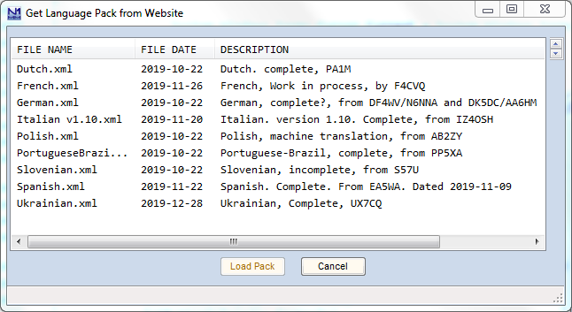

  <p>Isso mostra uma lista das traduções disponíveis no site do N1MM Logger+. Clicar em uma linha habilita o botão Load Pack, que baixa o arquivo XML correspondente e o instala no N1MM Logger+ do seu computador.</p>

  <h3>Selecting a Language (Selecionando um Idioma)</h3>

  <p>Para habilitar um idioma específico no N1MM Logger+, vá em Config...Configure Ports, Mode Control, Audio, Other... Na aba "Other", selecione o idioma desejado na caixa Language. Note que só estarão disponíveis os idiomas já carregados na sua tabela de tradução. Antes de rodar as ferramentas de tradução (abaixo), até o inglês pode estar ausente da lista, mas isso não afeta o funcionamento em inglês. A configuração padrão é inglês.</p>

  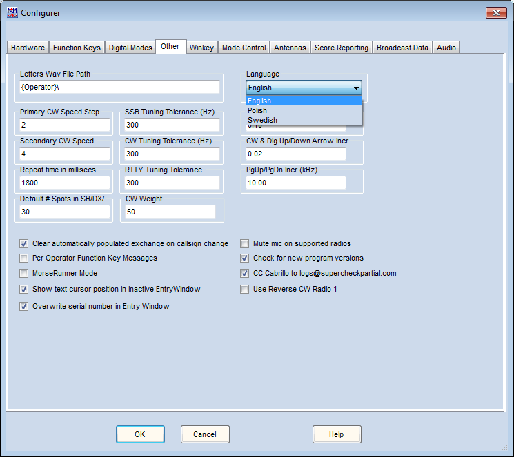

  <h3>Adding New Translations (Adicionando Novas Traduções)</h3>

  <p><strong>NOTA GERAL:</strong> o kit de ferramentas de tradução permite exportar e importar tanto arquivos Excel quanto .CSV. Na opinião do autor original, o Excel é o formato melhor, pela robustez da aplicação e recuperação de arquivos em caso de falha. Claro, nem todo mundo tem acesso ao Excel, e precisa usar o formato .CSV. Não há recomendação aqui sobre qual ferramenta escolher — uma busca no Google mostra várias opções gratuitas.</p>

  <blockquote><p><strong>De qualquer forma, NÃO USE o Excel PARA CRIAR ARQUIVOS .CSV. Você vai ter uma dor de cabeça enorme, pois as configurações padrão do Excel não exportam corretamente caracteres UTF-8 para o formato .CSV, correndo o risco de corromper suas traduções.</strong></p></blockquote>

  <p>Abra a janela em Config...Manage Translations... A tela Manage Translations aparece. Clique na aba Translation Table Maint. Deve se parecer com isto:</p>

  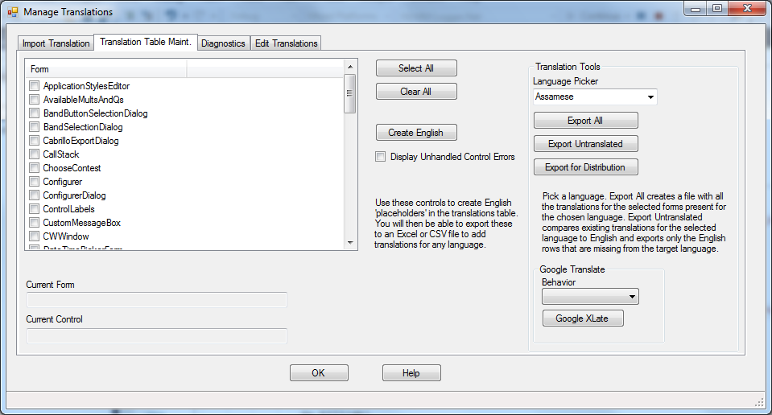

  <p>A caixa de listagem mostra TODOS os formulários da aplicação N1MM Logger+. Note que alguns formulários não foram habilitados para tradução pelos desenvolvedores, mas são relativamente pouco importantes. Selecione o(s) formulário(s) que deseja traduzir e clique no botão "Create English". Isso vai preencher a tabela do banco de dados com todas as strings traduzíveis daqueles formulários. Ao terminar, a ferramenta exibe a seguinte mensagem:</p>

  

  <p>Na seção "Translation Tools", selecione "English" na caixa Language Picker. Depois clique em "Export All" ou "Export Untranslated". "Export All" exporta TODAS as linhas em inglês da tabela de tradução para o(s) formulário(s) selecionado(s) — é por aqui que você começa uma configuração nova de um idioma.</p>

  <p>"Export Untranslated" exporta APENAS as entradas em inglês que AINDA NÃO têm uma tradução para o idioma selecionado na tabela. Você faria isso, por exemplo, ao adicionar traduções para novos controles em um formulário atualizado, ou para completar um conjunto de traduções parcial.</p>

  <p>Note que, ao escolher um idioma diferente de inglês no Language Picker, a ferramenta exporta as entradas naquele idioma — útil para alterar um conjunto de traduções já existente, ou como ponto de partida para traduzir dialetos ou idiomas parecidos.</p>

  <p>Clicar em qualquer um dos botões abre uma janela padrão de salvar arquivo. O tipo de arquivo criado depende da extensão usada: ".csv" para um arquivo de valores separados por vírgula, ou ".xlsx" para uma planilha Excel. Esta documentação usa o Excel nos exemplos. Ao terminar, aparece a seguinte mensagem:</p>

  

  <p>O restante da seção "Translation Tools" será descrito mais adiante.</p>

  <p>Abra o arquivo criado na ferramenta apropriada. Abaixo, um exemplo usando o Excel com o formulário "Configurer".</p>

  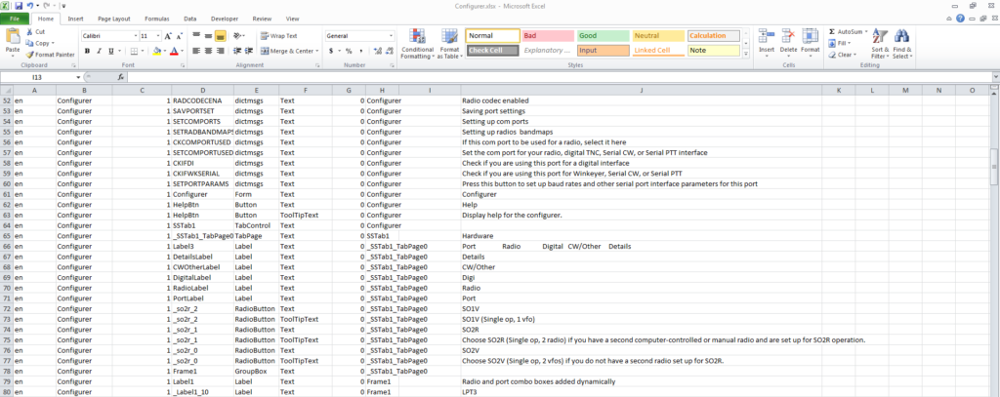

  <p>NÃO ALTERE NENHUMA ENTRADA NAS COLUNAS A-I!!! Elas ficam ocultas no Excel por padrão (largura zero). Aumente as colunas J e K para o arquivo ficar parecido com isto:</p>

  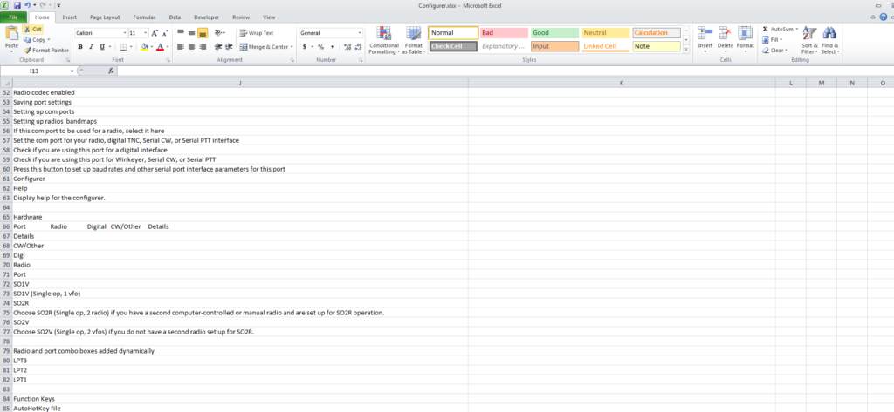

  <p>Na coluna "K", adicione sua tradução para o texto da coluna "J". Este exemplo está em polonês. Preste atenção às seguintes regras:</p>

  <ul>
    <li>Não apague nenhuma linha, mesmo com o texto em branco. Se o controle é um container sem texto traduzível, a entrada ainda é necessária para determinar a hierarquia entre controles pai e filho</li>
    <li>Se você não quiser traduzir o texto (por exemplo, por ser uma sigla que se mantém igual em inglês), copie o texto da coluna J para a coluna K</li>
  </ul>

  <p>Depois de pronto, o arquivo fica assim:</p>

  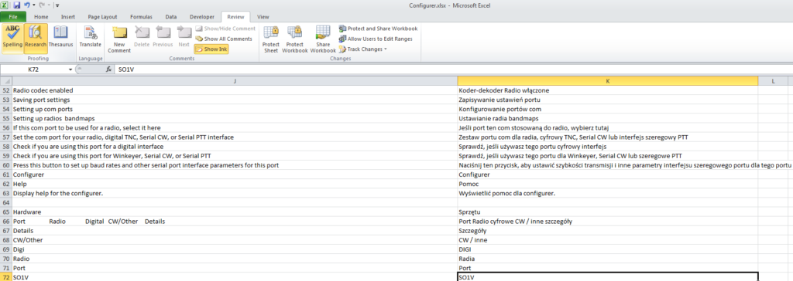

  <p><strong>NOTA IMPORTANTE: se você está traduzindo só parte de um formulário, garanta que apagou todas as linhas da planilha onde a coluna em inglês não está vazia, mas a coluna traduzida está. Caso contrário, os elementos não traduzidos daquele(s) formulário(s) vão exibir espaços em branco em vez de texto válido.</strong></p>

  <p>Clique na aba "Import Translation". Aparece o seguinte:</p>

  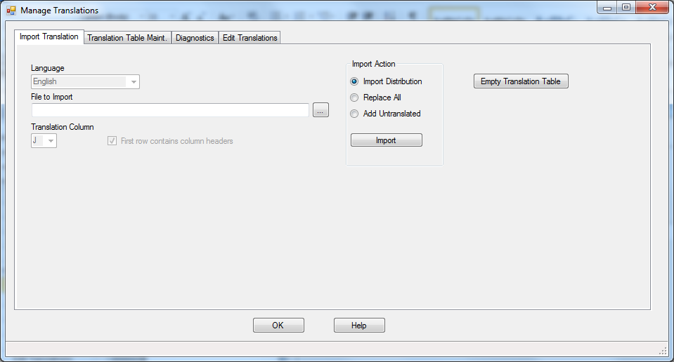

  <p>Clique no botão "..." para navegar até o arquivo criado no passo anterior, ou digite o caminho e o nome do arquivo na caixa de texto.</p>

  <p>Em "Import Action", selecione "Add Untranslated" para adicionar SOMENTE as linhas do seu arquivo que AINDA NÃO EXISTEM na tabela de tradução para o idioma de destino. Selecione "Replace All" se quiser apagar todas as traduções dos formulários selecionados antes de importar — isso habilita os controles abaixo, que ficam desabilitados por padrão.</p>

  <p>Escolha o idioma para o qual você traduziu.</p>

  <p>Defina a coluna de tradução como a que contém suas traduções ("K", neste caso).</p>

  <p>Desmarque "First row contains column headers" se você apagou a primeira linha.</p>

  <p>NOTA: a coluna B do arquivo de importação contém o nome do formulário dos controles sendo traduzidos. Ao importar o arquivo, o valor dessa coluna é usado para determinar a qual formulário o controle pertence, e quais traduções (se houver) devem ser apagadas caso "Replace All" tenha sido selecionado. Você será perguntado, para cada novo formulário, se tem certeza de que quer apagar as traduções existentes.</p>

  <p>O resultado da configuração acima:</p>

  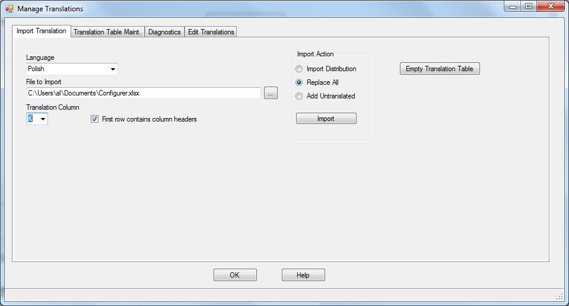

  <p>Clique no botão "Import" quando estiver pronto. Uma mensagem aparece ao terminar:</p>

  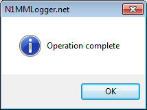

  <p>Agora vá para a Entry Window e selecione Config...Configure Ports, Mode Control, Audio, Other... Na aba "Other", selecione o idioma recém-traduzido na caixa Language. Usando o exemplo em polonês, isto deve acontecer na Entry Window ao clicar OK na configuração:</p>

  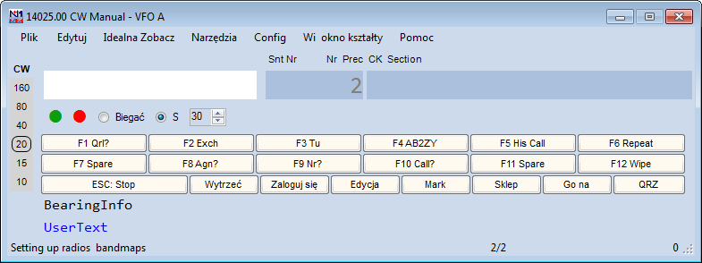

  <h3>Sharing Translations and Using the Translation Work of Others (Compartilhando e Usando Traduções de Outros)</h3>

  <p>Para compartilhar seu trabalho de tradução com outras pessoas, clique na aba Translation Table Maint. e selecione os formulários que deseja compartilhar. Escolha o idioma traduzido no seletor de idioma. Clique no botão Export for Distribution.</p>

  <p>Isso abre uma janela padrão de salvar arquivo, permitindo escolher local e nome do arquivo exportado — sempre em formato XML. Clique OK e o arquivo é criado.</p>

  <p>Quem for usar esse arquivo não precisa repetir nenhuma das etapas acima para habilitar as traduções dos formulários e idioma salvos no arquivo de distribuição. Use o botão "..." para escolher o arquivo a importar, depois clique em Import. Depois vá na aba Configure Ports...Other e selecione o idioma recém-importado. As janelas traduzidas no arquivo importado passam a ser exibidas naquele idioma.</p>

  <p>Abaixo, um exemplo de importação por outro usuário:</p>

  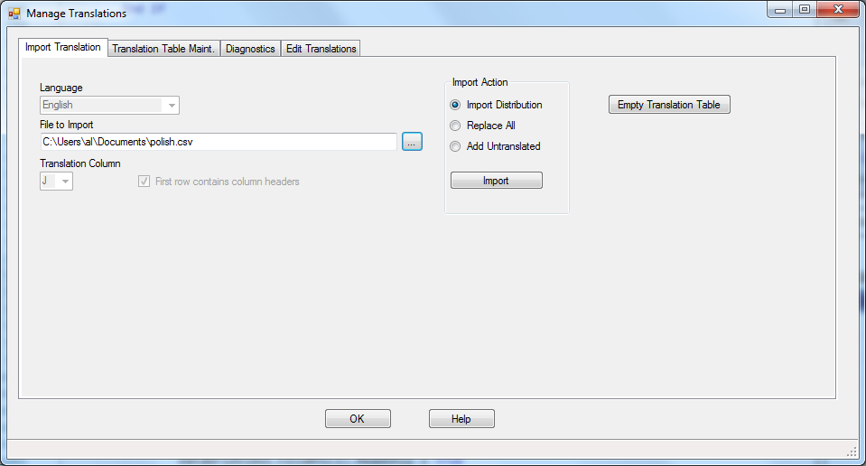

  <p>Note que só os membros da equipe de tradução costumam precisar usar esta função. Usuários em geral devem usar a função totalmente automatizada Download and Install Language Pack, descrita anteriormente.</p>

  <h3>Empty Translation Table (Esvaziar a Tabela de Tradução)</h3>

  <p>O Empty Translation Table faz exatamente o que o nome diz: limpa a tabela de tradução de TODAS as entradas, tanto traduzidas quanto em inglês. Não use essa função se você não tiver cópias do seu trabalho de tradução salvas em arquivos Excel ou .csv.</p>

  <h3>Google Translate</h3>

  <p>Essa funcionalidade foi originalmente incluída para ajudar os desenvolvedores a criar traduções de teste. Pode ou não ser útil para tradutores como ponto de partida. Selecione os formulários desejados e escolha "Refresh All" ou "Add Untranslated" na caixa de comportamento (Behavior). "Refresh All" apaga qualquer tradução existente para o(s) formulário(s) e idioma selecionados, enquanto "Add Untranslated" usa o Google apenas para traduzir elementos de texto em inglês ainda não traduzidos.</p>

  <p>Algumas notas sobre essa função:</p>

  <ul>
    <li>Não tem suporte oficial</li>
    <li>Usa uma funcionalidade não documentada do site do Google Translate, que dispensa a instalação de qualquer software adicional do Google no computador do usuário</li>
    <li>Por isso, tem uma cota de cerca de 500 traduções antes de o usuário ser temporariamente bloqueado. O acesso volta depois de cerca de uma hora. Se você usar "Add Untranslated" depois desse erro, ele recomeça de onde parou</li>
    <li>As traduções terminam no primeiro ponto final do elemento de texto traduzido. Assim, elementos de texto com várias frases só terão a primeira traduzida</li>
  </ul>

  <h3>Diagnostics Tab (Aba de Diagnóstico)</h3>

  <p>A aba de diagnóstico verifica a integridade da tabela de tradução. Ela mostra traduções de objetos de interface que não existem mais na aplicação, e objetos em inglês que ainda não foram traduzidos para o idioma selecionado. Isso é orientado pelos formulários selecionados na aba Translation Table Maint. É pensada principalmente como ferramenta de desenvolvedor, mas não há problema em usá-la. Ela não usa os placeholders em inglês existentes para comparação; em vez disso, faz uma nova varredura completa dos formulários selecionados e a usa como referência.</p>

  <h3>Edit Translations (Editar Traduções)</h3>

  <p>A aba Edit Translations exibe o banco de dados de traduções em uma grade, com capacidade <em>limitada</em> de edição de texto. Ao clicar na aba, o banco de dados inteiro aparece na grade. Três filtros permitem restringir a exibição por idioma, formulário e controle. Os ícones de funil aplicam e removem os filtros, respectivamente. O formulário é ilustrado abaixo:</p>

  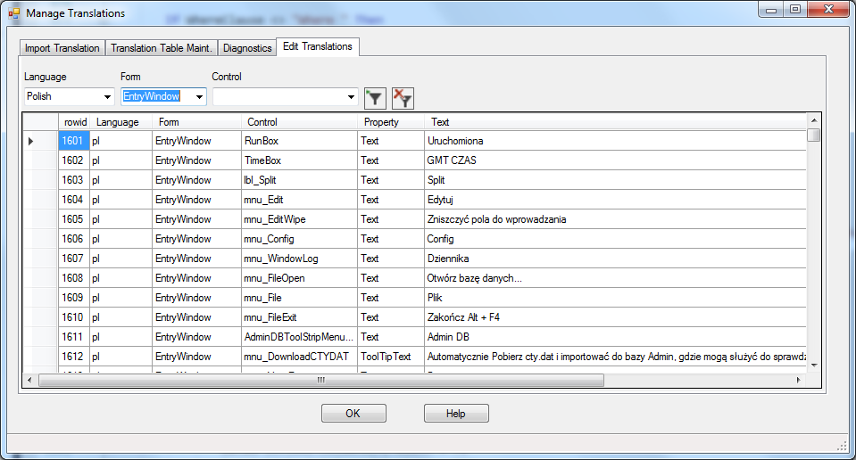

  <p>A única coluna clicável e editável é a chamada "Text", e só linhas que não estão em inglês podem ser editadas. Tentar editar uma linha em inglês gera uma mensagem de erro, e o texto volta ao estado anterior. O objetivo desta função é permitir pequenos ajustes em algumas traduções de controle, sem precisar fazer todo o processo de exportação e importação.</p>

  <p>Clicar no botão "Remove Filter" também atualiza a tela.</p>

</main>

<footer class="rodape">
  <div class="conteudo">
    Conteúdo original: <a href="https://n1mmwp.hamdocs.com/setup/localization/" target="_blank" rel="noopener">N1MM Logger+ Documentation</a>,
    Copyright &copy; N1MM Logger+ Team. Tradução para PT-BR: comunidade brasileira de radioamadorismo.
    Esta é uma tradução não-oficial, sem vínculo com os autores originais.<br>
    Projeto do <a href="https://gg52floripadx.com/" target="_blank" rel="noopener">GG52 Floripa DX</a> — iniciativa de <a href="https://pp5kj.com" target="_blank" rel="noopener">PP5KJ</a>.
  </div>
</footer>

</body>
</html>
